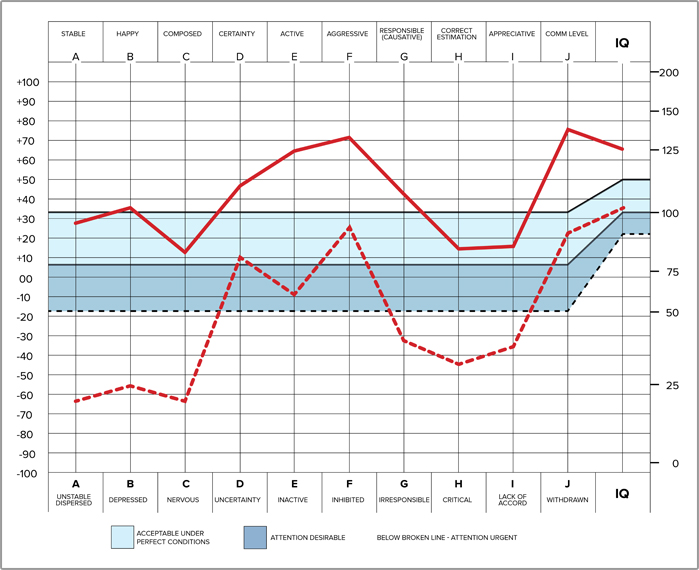

WHAT MAKES THE OCA UNIQUE?
No other personality test and analysis gives you both—results and practical solutions.
You can be more competent, successful and happier than you ever thought possible, once you identify the key areas of your personality. By discovering which traits are currently benefitting your life and which ones need improvement, you can then take the essential steps to enhance your strengths and overcome your weaknesses.
Plus the OCA and follow up consultation are a FREE public service with no further obligation required.
- Stability
- Happiness
- Composure
- Certainty
- Activeness
- Aggressiveness
- Responsible Behavior
- Aptitude for Correct Estimation
- Appreciation
- Communication Level
